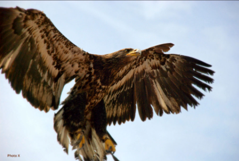
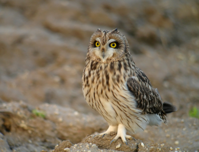

Ce sont les rapaces, c'est-à-dire des oiseaux carnivores chassent leurs proies, qui ont la meilleure vue.

l'aigle royal à gauche, peut repérer une proie à plus de 3km par temps. Et le faucon pèlerin à droite, peut foncer sur des proies situées à plus de 8km.

Le hibou à gauche, voit très bien la nuit grace à ses gros yeux réunis à l'avant de sa tete. Et le vautour peut voler à plus de 5000m et voir cadavre d'animal à 3km !